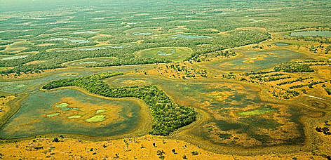

História
A história do Centro-Oeste, assim como das demais regiões brasileiras, está atrelada ao processo de colonização do Brasil por Portugal. Em razão da sua localização geográfica, o Centro-Oeste foi uma das últimas regiões geográficas do Brasil exploradas pelos portugueses. Os primeiros registros de exploração do território centro-oestino foram por meio das incursões dos bandeirantes, que partiram de São Paulo em busca de jazidas minerais de alto valor econômico, como o ouro.
A descoberta desses minerais potencializou a instalação dos primeiros núcleos urbanos da região, como as cidades de Goiás (GO) e Cuiabá (MT). Além do fator econômico, a preocupação dos portugueses com a proteção do território e a delimitação de fronteiras com os países vizinhos resultaram na criação de núcleos urbanos atrelados a instalações militares, como a cidade de Corumbá (MS).
No final do século XIX e no início do século XX, houve um aumento do processo de ocupação da região e da criação de novos centros urbanos de pequeno porte. Nesse período, destacou-se a criação de linhas de telégrafo, utilizadas para comunicação, assim como de linhas de transporte, como a ferrovia Novoeste, entre São Paulo e Mato Grosso do Sul.
O crescimento da região também foi fundamentado no incentivo governamental em nível federal e estadual, como a instalação de colônias de povoamento. A criação de duas cidades planejadas ao longo do século XX, Goiânia e Brasília, também contribuiu para o desenvolvimento econômico e demográfico da região. Na atualidade, o principal motor econômico do Centro-Oeste são as atividades ligadas ao agronegócio, que contribuem diretamente para o crescimento da região e, ainda, para a transformação do território centro-oestino.
Cultura
A Região Centro-Oeste do Brasil, formada pelos estados de Goiás, Mato Grosso, Mato Grosso do Sul e Distrito Federal, contabiliza um total de 11.056.373 habitantes, de acordo com o censo demográfico do IBGE (Instituto Brasileiro de Geografia e Estatística), de 2021.
Na região, existe uma diversidade cultural ricamente influenciada pelas culturas indígena, boliviana e paraguaia.
Além disso, o Centro-Oeste recebeu influência de aspectos culturais de inúmeros migrantes, em função das fronteiras que faz com todas as outras partes do Brasil (Nordeste, Norte, Sudeste e Sul), com elementos da cultura indígena, dos imigrantes paulistas, mineiros, gaúchos, bolivianos e paraguaios.
Manifestações Culturais
As principais manifestações culturais no estado de Goiás são: a Procissão do Fogaréu e as Cavalhadas.
Cavalhada
Em Pirenópolis, ocorre uma das mais significativas Cavalhadas do Brasil. Trata-se da encenação de uma batalha medieval realizada ao ar livre, onde um grupo de cavaleiros se veste de azul, representando os cristãos, e um grupo de cavaleiros se veste de vermelho, representando os mouros. A festa tem duração de três dias, e apresenta como desfecho a vitória dos cristãos sobre os mouros e a conversão deles para o cristianismo.
Outro elemento da cultura goiana é tear manual, que em muitos lugares tornou-se peça de museu. No entanto, em alguns municípios goianos ainda são encontradas tecelãs confeccionando várias peças de tecido, agora valorizadas pelo turismo.

Fogaréu
A tradicional Procissão do Fogaréu é realizada na Cidade de Goiás (GO) desde 1745. Reconhecida como Patrimônio Cultural Imaterial do estado de Goiás, a representação da perseguição e prisão de Jesus Cristo é realizada sempre nas primeiras horas da quinta-feira da semana santa.
Ao som de tambores tocados pela fanfarra, os farricocos, que representam os soldados romanos, começam a andar pela cidade com tochas nas mãos. O gesto representa a procura de Jesus para a crucificação. Eles usam túnicas e capuzes coloridos e saem descalços pela cidade.
Vegetação
A região Centro-Oeste é a segunda maior do país em extensão territorial, e a menos populosa. A região não possui lugares com grandes altitudes. O seu relevo é dividido em três áreas principais: planalto central, planalto meridional e planície do pantanal. O clima predominante é o tropical semiúmido, com duas estações bem definidas – um inverno seco e um verão muito quente e chuvoso. As temperaturas variam bastante: podem chegar a cerca de 40 °C nos meses mais quentes e 15 °C nos meses mais frios.
É no Centro-Oeste que se encontra a maior planície alagada do mundo: o Pantanal. Além dela, a vegetação que predomina é o Cerrado, que se caracteriza pela presença de árvores baixas, espaçadas com tronco e galhos retorcidos. Já o norte de Mato Grosso é caracterizado pela Floresta Amazônica. Em termos de recursos hídricos, a região é muito rica, pois é drenada por muitos rios, que formam três grandes bacias hidrográficas: a Amazônica, a do Tocantins-Araguaia e a Platina.
Planalto Central
O Planalto Central se localiza na região central do país, a plataforma continental brasileira, assentado sobre as rochas mais antigas do planeta Terra, compostas pelos mais antigos sedimentos de Gaia, da ordem de um a dois bilhões de anos. A especificidade do grupo de rochas na região se denomina Paranoá, e se estende para o Norte até a chapada dos Veadeiros, no qual se compõem de quartizitos, ardósias, ritmitos.
Os planaltos são formados pelo processo de erosão, fenômenos que provocam desgaste no solo, que pode ser provocado por agentes internos, como vulcanismo, tectonismos, ou agentes externos, como a água, o vento, e podem alterar as superfícies, portanto as regiões do planalto apresentam morros, serras ou elevações.
Planalto Meridional
O Planalto Meridional ou Planalto das Araucárias é banhado pelos rios Uruguai e Paraná. Composto geologicamente por arenito e grandes extensões de basalto, é formado principalmente por terrenos sedimentares. Para facilitar a sua caracterização, o Planalto Meridional costuma ser dividido em duas partes, como Planalto Arenito-basáltico e Depressão Periférica.
A descrição geológica do Planalto Meridional é caracterizada pela ocorrência de rochas vulcânicas, da Formação Serra Geral, por volta do jurássico-cretáceo, com um pacote sedimentar sobreposto, pertencente a Formação Tupanciretã, terciaria. Os solos do Planalto Meridional possuem características próprias que dependem da rocha mãe e das condições climáticas, além da topografia, drenagem, entre outros pontos.
Planície do Pantanal
A principal característica da Planície do Pantanal é a sua baixa fertilidade. Isso se deve à composição química das suas rochas originárias e aos longos períodos de cheia, durante os quais boa parte do território permanece alagada. Este bioma é composto por solos argilosos, formados por meio do processo de deposição de sedimentos.
Sua baixa declividade contribui para a formação de áreas alagadas no verão, quando o volume de chuvas é maior, onde permanece inundada por pelo menos três meses durante o ano, o que favorece a formação de matéria orgânica. Durante o período de seca, a matéria orgânica é depositada e o solo até então alagado se torna mais fértil, propício para o desenvolvimento da vegetação. É comum a presença de elevações isoladas no Pantanal, conhecidas como morros-testemunho, como a Serra do Maracaju.
Fauna da Região Centro-Oeste
Em função da presença de três importantes biomas (cerrado, pantanal e floresta amazônica), a região centro-oeste do Brasil possui rica diversidade no tocante a fauna e a flora.
Principais animais da fauna da região Centro-Oeste:
| Gambá | Ariranha | Anta |
| Onça-pintada | Gato-palheiro | Tamanduá-bandeira |
| Jaguatirica | Cachorro-do-mato | Veado-campeiro |
| Veado-mateiro | Macaco-prego | Quati |
| Veado-catingueiro | Preá | Capivara |
| Lobo-guará | Sagui | Porco-espinho |
| Paca | Águia-cinzenta | Anu-preto |
| Quero-quero | Pato-mergulhão | Tucano |
| Papagaio-verdadeiro | Canário | Seriema |
| Beija-flor | Falcão-de-peito-vermelho | Cachorro-vinagre |
| Cervo-do-pantanal | Jacaré-do-pantanal | Carcará |
| Jabuti | Cágado | Jacaré-coroa |
| Bicho-preguiça | Queixada |
Principais árvores, arbustos e plantas da flora da região Centro-Oeste:
| Guariroba | Babaçu | Araçá-roxo |
| Macaúba | Pequi | Figueira |
| Brejaúba | Marmeleiro | Jussara |
| Jabuticabeira | Buriti | Angico |
| Aroeira | Palmeira | Ipê-amarelo |
| Mandacaru | Orquídeas | Piúvas |
Curiosidades
Dentre os planaltos mais conhecidos do Centro-Oeste, podemos destacar a Chapada dos Parecis, no centro-norte de Mato Grosso; a Chapada dos Guimarães, também no Mato Grosso; e a Chapada dos Veadeiros, em Goiás. Todos esses planaltos possuem altitudes que variam de 300 m a 1200 m.
Tem grande força no setor primário da economia. As atividades agrícolas e pecuaristas são destaques nos três maiores estados em extensão territorial, com ênfase para o Mato Grosso, que possui o maior rebanho bovino brasileiro.
Por muito tempo, o Centro-Oeste brasileiro foi uma área espanhola, devido ao Tratado de Tordesilhas. Durante quase dois séculos, apenas jesuítas espanhóis aventuravam-se nas áreas interioranas para catequizar nativos, nas chamadas missões jesuíticas.
Visite as outras regiões